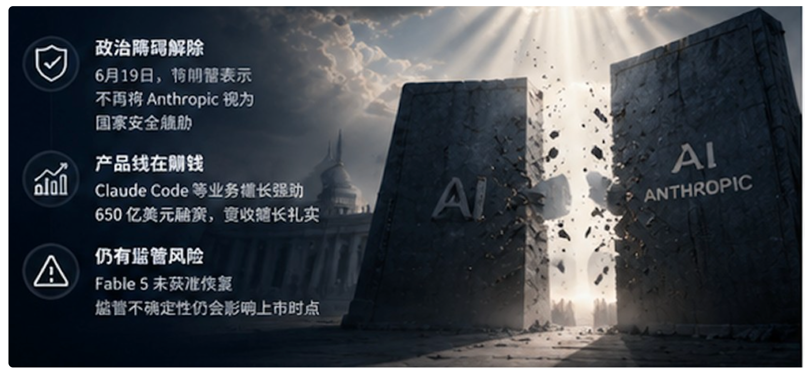
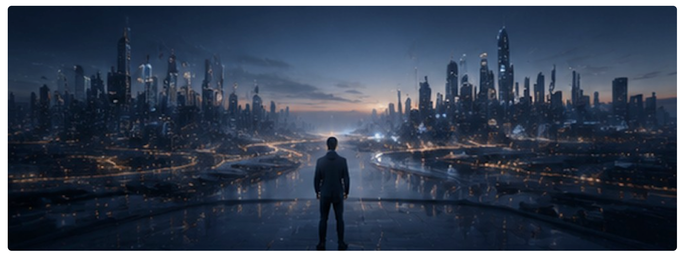

一、三张时间表，讲的是同一个故事
先把事实摆清楚，这一节里的每个数字都有公开报道支撑。
SpaceX 已经上了，而且给所有人打了个样。 据 Bloomberg、Benzinga 等报道，SpaceX 于 6 月 11 日在纳斯达克上市，代码 SPCX，发行估值高达约 1.77 万亿美元。上市之初股价一度从发行价冲到 225 美元附近，然后又跌了回来——据 indmoney 等的统计，回吐了约三成涨幅，一度跌回 151 美元一线。一家把估值定在天上的公司，用真实的股价告诉市场：这个数字，市场未必买账。
Anthropic 选择抢跑。 据多家媒体和 SEC 相关报道，Anthropic 于 6 月 1 日向 SEC 递交了保密版 S-1 招股书，最新估值约 9650 亿美元，目标是最快 10 月在纳斯达克上市，承销商是高盛、摩根大通和摩根士丹利。如果成行，它有可能成为第一家以约万亿美元估值登陆公开市场的公司。
OpenAI 递了表，却踩了刹车。 据 Yahoo Finance、CNBC 报道，OpenAI 在 6 月初（多家报道为 6 月 8 日）也递交了保密 S-1。但据《纽约时报》6 月 25 日、Bloomberg 6 月 26 日报道，OpenAI 正倾向于把上市推迟到 2027 年，而不是原先市场预期的 2026 年第四季度。CEO Sam Altman 坚持一个底线：估值不能低于 1 万亿美元（它 3 月完成融资时的估值是 8520 亿美元）。据 ZeroHedge 引述，消息一出，Polymarket 上"OpenAI 2026 年内上市"的赔率从五成以上直接跌到三成以下。
三张时间表拼在一起，其实是一个很朴素的故事：钱多到烧不完，但公开市场第一次开始问一个扫地的问题——你们到底值不值这个价？
二、OpenAI 为什么要等：SpaceX 破发那一课，太贵了
OpenAI 明明已经递表，为什么反而往后拖？把公开报道里的理由拼起来，有三条。
第一条，最直接的，是被 SpaceX 吓到了。 据 Yahoo Finance 报道，OpenAI 推迟的一个重要原因，正是 SpaceX 上市后股价的剧烈波动。逻辑很简单：如果连 SpaceX 这种有火箭、有星链、有实打实现金流的公司，上市后估值都撑不住，那一家还在巨额烧钱的纯 AI 公司，凭什么指望市场心平气和地给它万亿估值？先看看别人怎么摔的，自己再决定要不要跳，这是很正常的选择。
第二条，是营收质量正在被打问号。 这一点更重要。同一时间，市场上另一条新闻"企业开始放弃高价旗舰模型、转向更便宜够用的方案"（这也是我们这个系列另一篇要专门讲的）。ZeroHedge 直接点破了这层顾忌：在"用量支出突然转向"的当口去上市，等于把一份可能是"一次性爆发"的营收摆到公开市场的显微镜下。上市公司每个季度都要交答卷，如果你的营收增长是靠少数客户的高价消费撑起来的，而这些客户正在想办法省钱，那这份答卷会很难看。晚一年上市，某种程度上是在赌"到那时故事能讲得更圆"。
第三条，是钱的压力其实没那么急。 据 Forbes 报道，亚马逊对 OpenAI 的承诺里，有 350 亿美元是要等到"OpenAI 上市或实现 AGI"才解锁——这确实给了它一点上市的动力。但整体上，OpenAI 手里的私募资金足够撑一阵，Altman 也公开说过，"有些事情作为私有公司做起来更容易"。既然不缺救命钱，那就没必要在市场情绪最差的时候硬上。
一句话总结 OpenAI 的算盘：不缺钱、怕破发、营收故事还没打磨好，那就等。
三、Anthropic 为什么敢冲：一个政治障碍刚刚被搬开
有意思的是，同样面对 SpaceX 破发这堂课，Anthropic 的选择相反——它在往前冲。为什么？
最关键的一步，是一个政治障碍在 6 月 19 日被搬开了。 前面我们讲过，Anthropic 因为 Fable 5 / Mythos 5 的事，被国防部一度贴上"供应链风险"的标签，还把政府告了。这个标签悬在头上，对一家准备上市的公司是致命的——没有哪个机构投资者愿意买一家"被本国政府视为国家安全威胁"的公司的股票。但据 indmoney、cryptopolitan 等引述，6 月 19 日特朗普对 Axios 表示，他不再把 Anthropic 看作国家安全威胁。这句话，等于把 Anthropic 上市路上最大的一块石头挪开了。
第二，是它的产品线真的在赚钱。 据前面几篇引用的报道，Claude Code 这类编程工具，是 Anthropic 近期营收增长的主力；报道中还提到了它 650 亿美元的 H 轮融资和约 470 亿美元的营收运行率披露。相比 OpenAI"营收会不会是一次性爆发"的疑虑，Anthropic 的编程业务被认为更扎实、更有粘性——这让它更有底气去面对公开市场的季度考核。
但它头上也挂着一把剑。 别忘了，Fable 5 到现在都没获准恢复。预测机构 FutureSearch 的分析就指出，6 月 12 日 Fable 的封禁虽然没有拉低 Anthropic 的估值中位数，却明显加大了它的"尾部风险"——也就是说，如果监管的不确定性再次发作，它的上市时间表可能被拖到很晚（最坏情形被推到 2028 年）。抢跑的另一面，是它必须在这把剑掉下来之前完成敲钟。
所以 Anthropic 和 OpenAI 的分歧，本质上不是谁更勇敢，而是两家公司对"自己最大的风险是什么"判断不同：OpenAI 最怕的是市场情绪和营收质量，Anthropic 最怕的是监管的下一次发作。一个选择等市场，一个选择抢在监管发作前上岸。

四、对做产品的人来说，"供应商上市"意味着什么
现在回到那个核心问题：这些跟做产品的你，到底有什么关系？关系很大。一家公司从私有变成上市公司，它对你这个用户的态度会发生几个可预期的变化。
变化一：价格的逻辑会变。 私有公司为了抢市场，可以长期亏本卖、用低价换增长。上市公司不行——它每个季度都要向股东证明"能赚钱"。这意味着，你现在享受的某些"倒贴式不合理"的模型定价，在供应商上市后，可能会重新审视。历史上无数次相似的结论都是一样的：先烧钱抢用户，上市后再涨价收割。你没必要恐慌，但你应该在长线规划时，把"当前价格可能不是永久价格"当成一个基本假设。
变化二：广告和商业化的压力会上来。 上市公司有营收增长的刚性压力。当订阅收入的天花板临近可见，广告几乎是所有消费级产品必会碰的选项。这里要说句公道话：目前 Anthropic 的产品是明确不投放广告、也不允许广告主付费让 Claude 在对话里推销（它专门就此发过说明）。但整个行业在上市压力下会走向哪里，是产品人需要长期盯着的一件事。
变化三：产品决策会更"短视"一点。 私有公司可以为了三年后的愿景，做一些短期不赚钱的事。上市公司被季度财报绑住后，往往更倾向于做能立刻体现在数字上的事。对你意味着：供应商的产品路线图，可能会更向"能快速变现的功能"倾斜，而一些叫好不叫座的长期投入，优先级可能会下降。
变化四：合规和披露反而是好事。 上市不全是坏消息。一家上市公司要接受更严格的财务披露和治理约束，这意味着你能拿到更透明的经营数据，来判断"这家供应商到底稳不稳、能不能长期依赖"。对于要把核心业务押在某家模型上的团队来说，供应商上市后的公开财报，是一份难得的尽调材料。
五、方法论：当你的关键供应商即将上市，你该做什么
判断讲完，落到动作。如果你的产品重度依赖某一家 AI 供应商，而这家供应商正走在上市路上，下面这几件事值得现在就做。
第一，把"当前定价"标记为"临时假设"，并做一次成本压力测试。 拿出你现在的模型调用成本，做三个版本的推演：价格不变、价格涨 50%、价格翻倍。看看在每一种情况下，你的产品毛利还撑不撑得住。如果"价格翻倍"会直接击穿你的商业模式，那你就找到了一个必须提前对冲的风险点——要么优化用量，要么准备备选供应商。
第二，区分"能变现的依赖"和"会被砍的依赖"。 上市公司会优先保能赚钱的产品线。你可以观察：你依赖的这个功能，对供应商来说是主力营收（比如编程 API），还是边缘尝试？如果是前者，它大概率会被长期投入、越做越好；如果是后者，你要做好"它某天被下线或停止更新"的准备。把你的核心链路，尽量搭在供应商也赚钱的功能上。
第三，用好公开财报这份免费尽调材料。 一旦供应商上市，它的招股书和季度财报会披露大量此前看不到的数据：营收结构、客户集中度、现金消耗速度、毛利率。养成读这些的习惯——它比任何分析师报告都更直接地告诉你，这家公司能不能长期陪你走下去。营收高度集中在少数大客户、现金烧得飞快，这些都是你该警惕的信号。
第四，别把鸡蛋放在一个"季度压力"篮子里。 这一点和我们反复强调的"多供应商"是一致的，但角度不同：这里的理由是，上市公司受季业绩驱动，行为会比私有公司更难预测（该涨价时涨价、该砍产品线时砍产品线）。手里有第二家供应商的能力，不是为了省点钱，而是为了在对方因为财报压力做出对你不利的决定时，你有说"不"的底气。
第五，把供应商的上市窗口，写进自己的产品排期。 如果你知道某家供应商大概率在未来半年上市，那么在这个窗口前后，它的价格、政策、产品都可能出现波动。聪明的做法是：不要在这个敏感窗口，去启动一个把身家性命都押在它身上的大项目。把重要决策，尽量安排在供应商的经营状态相对稳定的时段。
六、写在最后：估值是故事，现金流是事实
回到 SpaceX 那次破发。它真正的意义，不是某家公司跌了三成，而是它第一次让整个 AI 行业听到了公开市场的声音——你们可以在私募市场里互相把估值抬到天上，但一旦面对所有人，市场只认一件事：你到底能不能持续赚钱。
Anthropic 抢跑、OpenAI 踩刹车，表面看是两种节奏，本质上是同一个转折点：这个行业正在从"讲故事融资"的阶段，走向"用现金说话"的阶段。而这个转折，会顺着供应链一路传导到你——传导成你下个季度的模型账单、传导成你依赖的那个功能的命运。
你左右不了华尔街怎么给这些公司定价。但你能做的是：别把你的产品，建在一个你没算过账的价格假设之上。 估值是别人的故事，现金流才是你要面对的事实。

本文事实依据来自 SEC 相关文件、Bloomberg、CNBC、Yahoo Finance、Forbes、《纽约时报》、Axios 及 FutureSearch 等公开报道与分析（2026 年 6 月）。标注"据报道""倾向于"的部分为尚在进行、可能变动的信息，已与确证事实区分。文中涉及具体公司产品政策的表述，以各公司官方公开说明为准。